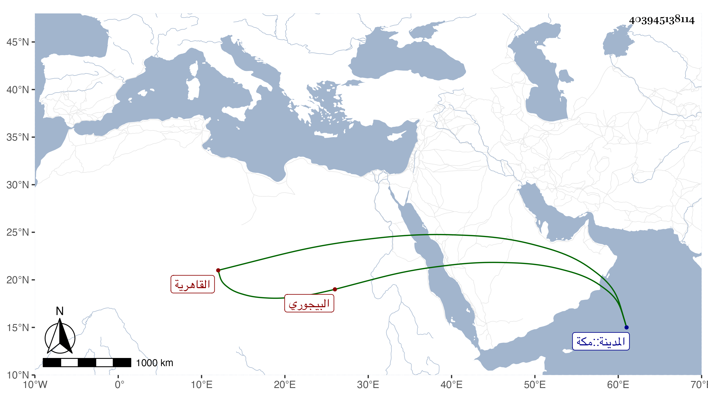

0902Sakhawi.DawLamic.ITO20230111-ara1.EIS1600.403945138114
Biography ID: 403945138114
624
فاطمة ابنة محمد بن إبراهيم بن أحمد البيجوري القاهرية شقيقة أحمد وابراهيم وهي واياه في بطن تزوجها الشهاب بن أبي السعود فدامت معه دهرا وجاورت معه في الحرمين غير مرة وكانت معه حين موته ورجعت فأقامت متأيمة وحجت بعده أيضا غير مرة وتعللت مدة إلى أن ماتت في جمادى الأولى سنة ست وتسعين وكانت خيرة .
